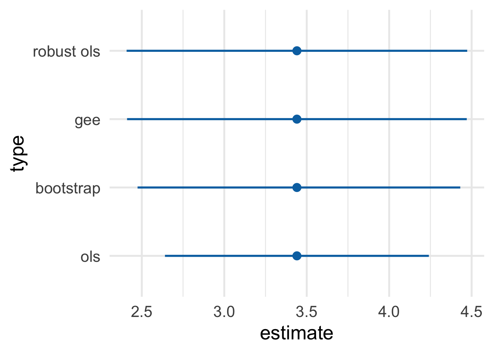
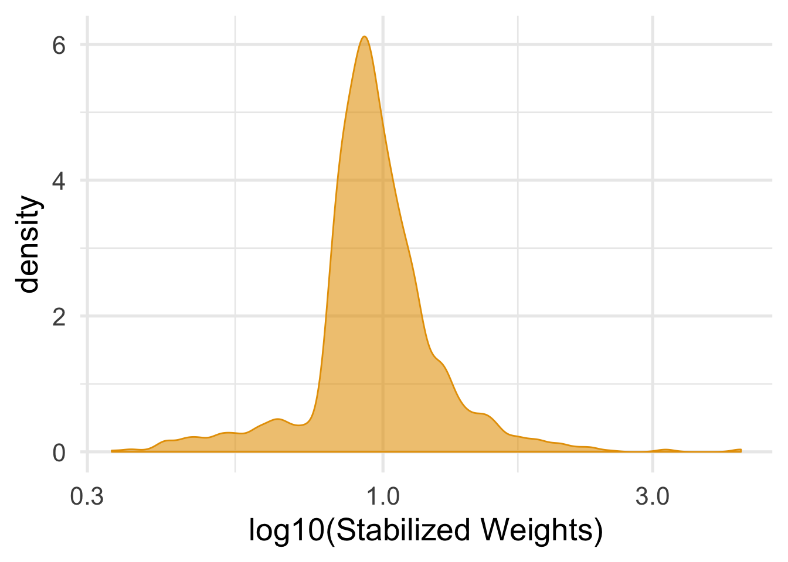
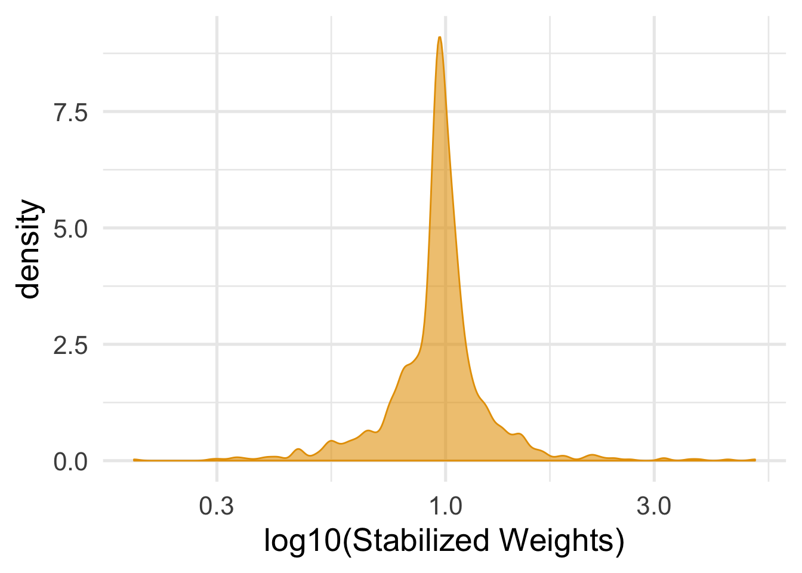

2 Chapter 12
This is the code for Chapter 12. As before, we’ll use the tidyverse metapackage and broom, as well as haven, for reading files from SAS (and other statistical software) and tableone for creating descriptive tables. We’ll also use the estimatr package for a robust version of lm(), geepack for robust generalized estimating equations modeling, and the boot package to help with bootstrapping confidence intervals.
The data is available to download on the Causal Inference website.
2.1 Program 12.1
library(tidyverse)
library(haven)
library(broom)
library(tableone)
library(estimatr)
library(geepack)
library(boot)Causal Inference uses data from NHEFS. To read in the SAS file, use read_sas() from the haven package.
## # A tibble: 1,629 x 64
## seqn qsmk death yrdth modth dadth sbp dbp sex age race income
## <dbl> <dbl> <dbl> <dbl> <dbl> <dbl> <dbl> <dbl> <dbl> <dbl> <dbl> <dbl>
## 1 233 0 0 NA NA NA 175 96 0 42 1 19
## 2 235 0 0 NA NA NA 123 80 0 36 0 18
## 3 244 0 0 NA NA NA 115 75 1 56 1 15
## 4 245 0 1 85 2 14 148 78 0 68 1 15
## 5 252 0 0 NA NA NA 118 77 0 40 0 18
## 6 257 0 0 NA NA NA 141 83 1 43 1 11
## 7 262 0 0 NA NA NA 132 69 1 56 0 19
## 8 266 0 0 NA NA NA 100 53 1 29 0 22
## 9 419 0 1 84 10 13 163 79 0 51 0 18
## 10 420 0 1 86 10 17 184 106 0 43 0 16
## # … with 1,619 more rows, and 52 more variables: marital <dbl>,
## # school <dbl>, education <dbl>, ht <dbl>, wt71 <dbl>, wt82 <dbl>,
## # wt82_71 <dbl>, birthplace <dbl>, smokeintensity <dbl>,
## # smkintensity82_71 <dbl>, smokeyrs <dbl>, asthma <dbl>, bronch <dbl>,
## # tb <dbl>, hf <dbl>, hbp <dbl>, pepticulcer <dbl>, colitis <dbl>,
## # hepatitis <dbl>, chroniccough <dbl>, hayfever <dbl>, diabetes <dbl>,
## # polio <dbl>, tumor <dbl>, nervousbreak <dbl>, alcoholpy <dbl>,
## # alcoholfreq <dbl>, alcoholtype <dbl>, alcoholhowmuch <dbl>,
## # pica <dbl>, headache <dbl>, otherpain <dbl>, weakheart <dbl>,
## # allergies <dbl>, nerves <dbl>, lackpep <dbl>, hbpmed <dbl>,
## # boweltrouble <dbl>, wtloss <dbl>, infection <dbl>, active <dbl>,
## # exercise <dbl>, birthcontrol <dbl>, pregnancies <dbl>,
## # cholesterol <dbl>, hightax82 <dbl>, price71 <dbl>, price82 <dbl>,
## # tax71 <dbl>, tax82 <dbl>, price71_82 <dbl>, tax71_82 <dbl>First, we need to clean up the data a little. There’s already a variable that could be an ID, seqn, but we’ll make a simpler one, id. We’re also going to add a variable called censored that is 1 if the weight variable from 1982 is missing and 0 otherwise. We’ll also create two categorical variables from age and school: older, a binary variable indicating if the person is older than 50, and education, a categorical variable representing years of education. Finally, we’ll change all of the categorical variables to have be factors.
nhefs <- nhefs %>%
mutate(
# add id and censored indicator
id = 1:n(),
censored = ifelse(is.na(wt82), 1, 0),
# recode age > 50 and years of school to categories
older = case_when(
is.na(age) ~ NA_real_,
age > 50 ~ 1,
TRUE ~ 0
),
education = case_when(
school < 9 ~ 1,
school < 12 ~ 2,
school == 12 ~ 3,
school < 16 ~ 4,
TRUE ~ 5
)
) %>%
# change categorical variables to factors
mutate_at(vars(sex, race, education, exercise, active), factor)For the analysis, we’ll only use participants with complete covariate data and drop the rest using drop_na() from the tidyr package.
# restrict to complete cases
nhefs_complete <- nhefs %>%
drop_na(qsmk, sex, race, age, school, smokeintensity, smokeyrs, exercise, active, wt71, wt82, wt82_71, censored)Then we’ll summarize the mean and SD for the difference in weight between 1982 and 1971, grouped by whether or not the participant quit smoking.
nhefs_complete %>%
# only show for pts not lost to follow-up
filter(censored == 0) %>%
group_by(qsmk) %>%
summarize(
mean_weight_change = mean(wt82_71),
sd = sd(wt82_71)
) %>%
knitr::kable(digits = 2)| qsmk | mean_weight_change | sd |
|---|---|---|
| 0 | 1.98 | 7.45 |
| 1 | 4.53 | 8.75 |
To recreate Table 12.1, we’ll use the tableone package, which easily creates descriptive tables. First, we’ll clean up the data a little more to have better labels for variable names and the levels within each variable. Then, we pass tbl1_data to CreateTableOne() and print it as a kable.
# a helper function to turn into Yes/No factor
fct_yesno <- function(x) {
factor(x, labels = c("No", "Yes"))
}
tbl1_data <- nhefs_complete %>%
# filter out participants lost to follow-up
filter(censored == 0) %>%
# turn categorical variables into factors
mutate(
university = fct_yesno(ifelse(education == 5, 1, 0)),
no_exercise = fct_yesno(ifelse(exercise == 2, 1, 0)),
inactive = fct_yesno(ifelse(active == 2, 1, 0)),
qsmk = factor(qsmk, levels = 1:0, c("Ceased Smoking", "Continued Smoking")),
sex = factor(sex, levels = 1:0, labels = c("Female", "Male")),
race = factor(race, levels = 1:0, labels = c("Other", "White"))
) %>%
# only include a subset of variables in the descriptive tbl
select(qsmk, age, sex, race, university, wt71, smokeintensity, smokeyrs, no_exercise, inactive) %>%
# rename variable names to match Table 12.1
rename(
"Smoking Cessation" = "qsmk",
"Age" = "age",
"Sex" = "sex",
"Race" = "race",
"University education" = "university",
"Weight, kg" = "wt71",
"Cigarettes/day" = "smokeintensity",
"Years smoking" = "smokeyrs",
"Little or no exercise" = "no_exercise",
"Inactive daily life" = "inactive"
)
tbl1_data %>%
# create a descriptive table
CreateTableOne(
# pull all variable names but smoking
vars = select(tbl1_data, -`Smoking Cessation`) %>% names,
# stratify by smoking status
strata = "Smoking Cessation",
# use `.` to direct the pipe to the `data` argument
data = .,
# don't show p-values
test = FALSE
) %>%
# print to a kable
kableone()| Ceased Smoking | Continued Smoking | |
|---|---|---|
| n | 403 | 1163 |
| Age (mean (sd)) | 46.17 (12.21) | 42.79 (11.79) |
| Sex = Male (%) | 220 (54.6) | 542 (46.6) |
| Race = White (%) | 367 (91.1) | 993 (85.4) |
| University education = Yes (%) | 62 (15.4) | 115 ( 9.9) |
| Weight, kg (mean (sd)) | 72.35 (15.63) | 70.30 (15.18) |
| Cigarettes/day (mean (sd)) | 18.60 (12.40) | 21.19 (11.48) |
| Years smoking (mean (sd)) | 26.03 (12.74) | 24.09 (11.71) |
| Little or no exercise = Yes (%) | 164 (40.7) | 441 (37.9) |
| Inactive daily life = Yes (%) | 45 (11.2) | 104 ( 8.9) |
2.2 Program 12.2
Now, we’ll fit the weights for the marginal structural model. For logistic regression, we’ll use glm() to fit a model called propensity_model.
# Estimation of IP weights via a logistic model
propensity_model <- glm(
qsmk ~ sex +
race + age + I(age^2) + education +
smokeintensity + I(smokeintensity^2) +
smokeyrs + I(smokeyrs^2) + exercise + active +
wt71 + I(wt71^2),
family = binomial(),
data = nhefs_complete
)To see the coefficients of the propensity score model:
propensity_model %>%
# get confidence intervals and exponentiate estimates
tidy(conf.int = TRUE, exponentiate = TRUE) %>%
select(-statistic, -p.value) %>%
knitr::kable(digits = 2)| term | estimate | std.error | conf.low | conf.high |
|---|---|---|---|---|
| (Intercept) | 0.11 | 1.38 | 0.01 | 1.56 |
| sex1 | 0.59 | 0.15 | 0.44 | 0.80 |
| race1 | 0.43 | 0.21 | 0.28 | 0.64 |
| age | 1.13 | 0.05 | 1.02 | 1.25 |
| I(age^2) | 1.00 | 0.00 | 1.00 | 1.00 |
| education2 | 0.97 | 0.20 | 0.66 | 1.43 |
| education3 | 1.09 | 0.18 | 0.77 | 1.55 |
| education4 | 1.07 | 0.27 | 0.62 | 1.81 |
| education5 | 1.61 | 0.23 | 1.03 | 2.51 |
| smokeintensity | 0.93 | 0.02 | 0.90 | 0.95 |
| I(smokeintensity^2) | 1.00 | 0.00 | 1.00 | 1.00 |
| smokeyrs | 0.93 | 0.03 | 0.88 | 0.98 |
| I(smokeyrs^2) | 1.00 | 0.00 | 1.00 | 1.00 |
| exercise1 | 1.43 | 0.18 | 1.01 | 2.04 |
| exercise2 | 1.49 | 0.19 | 1.03 | 2.15 |
| active1 | 1.03 | 0.13 | 0.80 | 1.34 |
| active2 | 1.19 | 0.21 | 0.78 | 1.81 |
| wt71 | 0.98 | 0.03 | 0.94 | 1.04 |
| I(wt71^2) | 1.00 | 0.00 | 1.00 | 1.00 |
To predict the weights, we’ll use the augment() function from broom to add the predicted probabilities of quitting smoking (called .fitted by default) to nhefs_complete. What we actually need is the probability for each person’s observed outcome, so for people who did not quit smoking, we need 1 - .fitted. Using mutate(), we’ll add a variable called wts, which is 1 divided by this probability.
nhefs_complete <- propensity_model %>%
augment(type.predict = "response", data = nhefs_complete) %>%
mutate(wts = 1 / ifelse(qsmk == 0, 1 - .fitted, .fitted))It’s important to look at the distribution of the weights to see its shape and if there are any extreme values.
## # A tibble: 1 x 2
## mean_wt sd_wts
## <dbl> <dbl>
## 1 2.00 1.47ggplot(nhefs_complete, aes(wts)) +
geom_density(col = "#E69F00", fill = "#E69F0095") +
# use a log scale for the x axis
scale_x_log10() +
theme_minimal(base_size = 20) +
xlab("log10(Weights)")
While OLS regression, using lm() with weights = wts, will work fine for the estimate, the standard errors tend to be too small when we use weights. We’ll get the confidence intervals using for approaches: OLS, GEE, OLS with robust standard errors, and bootstrapped confidence intervals. tidy_est_cis() is a helper function to get the estimate and confidence intervals for each model.
tidy_est_cis <- function(.df, .type) {
.df %>%
# add the name of the model to the data
mutate(type = .type) %>%
filter(term == "qsmk") %>%
select(type, estimate, conf.low, conf.high)
}
# standard error a little too small
ols_cis <- lm(
wt82_71 ~ qsmk,
data = nhefs_complete,
# weight by inverse probability
weights = wts
) %>%
tidy(conf.int = TRUE) %>%
tidy_est_cis("ols")
ols_cis## # A tibble: 1 x 4
## type estimate conf.low conf.high
## <chr> <dbl> <dbl> <dbl>
## 1 ols 3.44 2.64 4.24geeglm() from geepack fits a GEE GLM using robust standard errors. We also need to specify the correlation structure and id variable.
gee_model <- geeglm(
wt82_71 ~ qsmk,
data = nhefs_complete,
std.err = "san.se", # default robust SE
weights = wts, # inverse probability weights
id = id,
corstr = "independence" # independent correlation structure
)
gee_model_cis <- tidy(gee_model, conf.int = TRUE) %>%
tidy_est_cis("gee")
gee_model_cis## # A tibble: 1 x 4
## type estimate conf.low conf.high
## <chr> <dbl> <dbl> <dbl>
## 1 gee 3.44 2.41 4.47lm_robust() from the estimatr package fits an OLS model but produces robust standard errors by default.
# easy robust SEs
robust_lm_model_cis <- lm_robust(
wt82_71 ~ qsmk, data = nhefs_complete,
weights = wts
) %>%
tidy() %>%
tidy_est_cis("robust ols")
robust_lm_model_cis## type estimate conf.low conf.high
## 1 robust ols 3.440535 2.407886 4.473185While traditional OLS gives confidence intervals that are a little to narrow, the robust methods give confidence intervals that are a little too wide. Bootstrapping gives CIs somewhere between, but to produce the right CIs, you need to bootstrap the entire fitting process, including the weights. We’ll use the boot package and write a function called model_nhefs() to fit the weights and marginal structural model. The output for model_nhefs() is the coefficient for qsmk in the marginal structural model.
model_nhefs <- function(data, indices) {
# use bootstrapped data
df <- data[indices, ]
# need to bootstrap the entire fitting process, including IPWs
propensity <- glm(qsmk ~ sex + race + age + I(age^2) + education +
smokeintensity + I(smokeintensity^2) +
smokeyrs + I(smokeyrs^2) + exercise + active +
wt71 + I(wt71^2),
family = binomial(), data = df)
df <- propensity %>%
augment(type.predict = "response", data = df) %>%
mutate(wts = 1 / ifelse(qsmk == 0, 1 - .fitted, .fitted))
lm(wt82_71 ~ qsmk, data = df, weights = wts) %>%
tidy() %>%
filter(term == "qsmk") %>%
# output the coefficient for `qsmk`
pull(estimate)
}To get bias-corrected CIs, we’ll use 2000 bootstrap replications.
# set seed for the bootstrapped confidence intervals
set.seed(1234)
bootstrap_estimates <- nhefs_complete %>%
# remove the variables added by `augment()` earlier
select(-.fitted:-wts) %>%
boot(model_nhefs, R = 2000)
bootstrap_cis <- bootstrap_estimates %>%
tidy(conf.int = TRUE, conf.method = "bca") %>%
mutate(type = "bootstrap") %>%
# rename `statistic` to match the other models
select(type, estimate = statistic, conf.low, conf.high)
bootstrap_cis## # A tibble: 1 x 4
## type estimate conf.low conf.high
## <chr> <dbl> <dbl> <dbl>
## 1 bootstrap 3.44 2.47 4.43The estimates are all the same, but the CIs vary a bit by method: the GEE and robust OLS CIs are a bit wider, and the traditional OLS CIs are smaller, with the bootstrapped CIs between.
bind_rows(
ols_cis,
gee_model_cis,
robust_lm_model_cis,
bootstrap_cis
) %>%
# calculate CI width to sort by it
mutate(width = conf.high - conf.low) %>%
arrange(width) %>%
# fix the order of the model types for the plot
mutate(type = fct_inorder(type)) %>%
ggplot(aes(x = type, y = estimate, ymin = conf.low, ymax = conf.high)) +
geom_pointrange(color = "#0172B1", size = 1, fatten = 3) +
coord_flip() +
theme_minimal(base_size = 20)
2.3 Program 12.3
Fitting stabilized weights is similar to inverse weights, but we need to fit a model for the numerator. To fit a model with no covariates, we can just put 1 on the right hand side, e.g. qsmk ~ 1. Predicting the probabilities for this model is the same as above. We’ll use augment() and left_join() to add the numerator probabilities to nhefs_complete, then divide numerator by the probabilities fit in Program 12.2 to get stabilized weights.
numerator <- glm(qsmk ~ 1, data = nhefs_complete, family = binomial())
nhefs_complete <- numerator %>%
augment(type.predict = "response", data = nhefs_complete) %>%
mutate(numerator = ifelse(qsmk == 0, 1 - .fitted, .fitted)) %>%
# take just the numerator probabilities
select(id, numerator) %>%
# join numerator probabilities to `nhefs_complete`
left_join(nhefs_complete, by = "id") %>%
# create stabilized weights
mutate(swts = numerator / ifelse(qsmk == 0, 1 - .fitted, .fitted))For stabilized weights, we want the mean to be about 1.
## # A tibble: 1 x 2
## mean_wt sd_wts
## <dbl> <dbl>
## 1 0.999 0.288ggplot(nhefs_complete, aes(swts)) +
geom_density(col = "#E69F00", fill = "#E69F0095") +
scale_x_log10() +
theme_minimal(base_size = 20) +
xlab("log10(Stabilized Weights)")
Even though it’s a little conservative, we’ll fit the marginal structural model with robust OLS.
## term estimate std.error statistic p.value conf.low conf.high
## 1 (Intercept) 1.779978 0.2248362 7.916778 4.581734e-15 1.338966 2.220990
## 2 qsmk 3.440535 0.5264638 6.535179 8.573524e-11 2.407886 4.473185
## df outcome
## 1 1564 wt82_71
## 2 1564 wt82_712.4 Program 12.4
nhefs_light_smokers <- nhefs %>%
drop_na(qsmk, sex, race, age, school, smokeintensity, smokeyrs, exercise, active, wt71, wt82, wt82_71, censored) %>%
filter(smokeintensity <= 25)
nhefs_light_smokers## # A tibble: 1,162 x 67
## seqn qsmk death yrdth modth dadth sbp dbp sex age race income
## <dbl> <dbl> <dbl> <dbl> <dbl> <dbl> <dbl> <dbl> <fct> <dbl> <fct> <dbl>
## 1 235 0 0 NA NA NA 123 80 0 36 0 18
## 2 244 0 0 NA NA NA 115 75 1 56 1 15
## 3 245 0 1 85 2 14 148 78 0 68 1 15
## 4 252 0 0 NA NA NA 118 77 0 40 0 18
## 5 257 0 0 NA NA NA 141 83 1 43 1 11
## 6 262 0 0 NA NA NA 132 69 1 56 0 19
## 7 266 0 0 NA NA NA 100 53 1 29 0 22
## 8 419 0 1 84 10 13 163 79 0 51 0 18
## 9 420 0 1 86 10 17 184 106 0 43 0 16
## 10 434 0 0 NA NA NA 127 80 1 54 0 16
## # … with 1,152 more rows, and 55 more variables: marital <dbl>,
## # school <dbl>, education <fct>, ht <dbl>, wt71 <dbl>, wt82 <dbl>,
## # wt82_71 <dbl>, birthplace <dbl>, smokeintensity <dbl>,
## # smkintensity82_71 <dbl>, smokeyrs <dbl>, asthma <dbl>, bronch <dbl>,
## # tb <dbl>, hf <dbl>, hbp <dbl>, pepticulcer <dbl>, colitis <dbl>,
## # hepatitis <dbl>, chroniccough <dbl>, hayfever <dbl>, diabetes <dbl>,
## # polio <dbl>, tumor <dbl>, nervousbreak <dbl>, alcoholpy <dbl>,
## # alcoholfreq <dbl>, alcoholtype <dbl>, alcoholhowmuch <dbl>,
## # pica <dbl>, headache <dbl>, otherpain <dbl>, weakheart <dbl>,
## # allergies <dbl>, nerves <dbl>, lackpep <dbl>, hbpmed <dbl>,
## # boweltrouble <dbl>, wtloss <dbl>, infection <dbl>, active <fct>,
## # exercise <fct>, birthcontrol <dbl>, pregnancies <dbl>,
## # cholesterol <dbl>, hightax82 <dbl>, price71 <dbl>, price82 <dbl>,
## # tax71 <dbl>, tax82 <dbl>, price71_82 <dbl>, tax71_82 <dbl>, id <int>,
## # censored <dbl>, older <dbl>denominator_model <- lm(smkintensity82_71 ~ sex + race + age + I(age^2) + education +
smokeintensity + I(smokeintensity^2) +
smokeyrs + I(smokeyrs^2) + exercise + active +
wt71 + I(wt71^2), data = nhefs_light_smokers)
denominators <- denominator_model %>%
augment(data = nhefs_light_smokers) %>%
mutate(denominator = dnorm(smkintensity82_71, .fitted, mean(.sigma, na.rm = TRUE))) %>%
select(id, denominator)
numerator_model <- lm(smkintensity82_71 ~ 1, data = nhefs_light_smokers)
numerators <- numerator_model %>%
augment(data = nhefs_light_smokers) %>%
mutate(numerator = dnorm(smkintensity82_71, .fitted, mean(.sigma, na.rm = TRUE))) %>%
select(id, numerator)
nhefs_light_smokers <- nhefs_light_smokers %>%
left_join(numerators, by = "id") %>%
left_join(denominators, by = "id") %>%
mutate(swts = numerator / denominator)
ggplot(nhefs_light_smokers, aes(swts)) +
geom_density(col = "#E69F00", fill = "#E69F0095") +
scale_x_log10() +
theme_minimal(base_size = 20) +
xlab("log10(Stabilized Weights)")
smk_intensity_model <- lm_robust(wt82_71 ~ smkintensity82_71 + I(smkintensity82_71^2), data = nhefs_light_smokers, weights = swts)
smk_intensity_model_ols <- lm(wt82_71 ~ smkintensity82_71 + I(smkintensity82_71^2), data = nhefs_light_smokers, weights = swts)
smk_intensity_model %>%
tidy()## term estimate std.error statistic p.value
## 1 (Intercept) 2.004524173 0.304377051 6.585661 6.851793e-11
## 2 smkintensity82_71 -0.108988851 0.032772315 -3.325638 9.097994e-04
## 3 I(smkintensity82_71^2) 0.002694946 0.002625509 1.026447 3.048951e-01
## conf.low conf.high df outcome
## 1 1.407332469 2.601715878 1159 wt82_71
## 2 -0.173288557 -0.044689144 1159 wt82_71
## 3 -0.002456336 0.007846227 1159 wt82_71calculate_contrast <- function(.coefs, x) {
.coefs[1] + .coefs[2] * x + .coefs[3] * x^2
}
boot_contrasts <- function(data, indices) {
.df <- data[indices, ]
coefs <- lm_robust(wt82_71 ~ smkintensity82_71 + I(smkintensity82_71^2), data = .df, weights = swts) %>%
tidy() %>%
pull(estimate)
c(calculate_contrast(coefs, 0), calculate_contrast(coefs, 20))
}
bootstrap_contrasts <- nhefs_light_smokers %>%
boot(boot_contrasts, R = 2000)
bootstrap_contrasts %>%
tidy(conf.int = TRUE, conf.meth = "bca")## # A tibble: 2 x 5
## statistic bias std.error conf.low conf.high
## <dbl> <dbl> <dbl> <dbl> <dbl>
## 1 2.00 -0.0338 0.300 1.44 2.63
## 2 0.903 0.221 1.38 -1.27 3.882.5 Program 12.5
logistic_msm <- geeglm(
death ~ qsmk,
data = nhefs_complete,
family = binomial(),
std.err = "san.se",
weights = swts,
id = id,
corstr = "independence"
)
tidy(logistic_msm, conf.int = TRUE, exponentiate = TRUE) ## # A tibble: 2 x 7
## term estimate std.error statistic p.value conf.low conf.high
## <chr> <dbl> <dbl> <dbl> <dbl> <dbl> <dbl>
## 1 (Intercept) 0.225 0.0789 356. 0 0.193 0.263
## 2 qsmk 1.03 0.157 0.0367 0.848 0.757 1.402.6 Program 12.6
numerator_sex <- glm(qsmk ~ sex, data = nhefs_complete, family = binomial())
nhefs_complete <- numerator_sex %>%
augment(type.predict = "response", data = nhefs_complete %>% select(-.fitted:-.std.resid)) %>%
mutate(numerator_sex = ifelse(qsmk == 0, 1 - .fitted, .fitted)) %>%
select(id, numerator_sex) %>%
left_join(nhefs_complete, by = "id") %>%
mutate(swts_sex = numerator_sex * wts)
nhefs_complete %>%
summarize(mean_wt = mean(swts_sex), sd_wts = sd(swts_sex))## # A tibble: 1 x 2
## mean_wt sd_wts
## <dbl> <dbl>
## 1 0.999 0.271ggplot(nhefs_complete, aes(swts_sex)) +
geom_density(col = "#E69F00", fill = "#E69F0095") +
scale_x_log10() +
theme_minimal(base_size = 20) +
xlab("log10(Stabilized Weights)")
## term estimate std.error statistic p.value conf.low
## 1 (Intercept) 1.784446876 0.3101597 5.75331559 1.051124e-08 1.1760735
## 2 qsmk 3.521977634 0.6585705 5.34791301 1.021696e-07 2.2302023
## 3 sex1 -0.008724784 0.4492401 -0.01942121 9.845076e-01 -0.8899019
## 4 qsmk:sex1 -0.159478525 1.0498718 -0.15190286 8.792832e-01 -2.2187851
## conf.high df outcome
## 1 2.3928202 1562 wt82_71
## 2 4.8137530 1562 wt82_71
## 3 0.8724524 1562 wt82_71
## 4 1.8998280 1562 wt82_712.7 Program 12.7
# using complete data set
nhefs_censored <- nhefs %>%
drop_na(qsmk, sex, race, age, school, smokeintensity, smokeyrs, exercise,
active, wt71)
numerator_sws_model <- glm(qsmk ~ 1, data = nhefs_censored, family = binomial())
numerators_sws <- numerator_sws_model %>%
augment(type.predict = "response", data = nhefs_censored) %>%
mutate(numerator_sw = ifelse(qsmk == 0, 1 - .fitted, .fitted)) %>%
select(id, numerator_sw)
denominator_sws_model <- glm(
qsmk ~ sex + race + age + I(age^2) + education +
smokeintensity + I(smokeintensity^2) +
smokeyrs + I(smokeyrs^2) + exercise + active +
wt71 + I(wt71^2),
data = nhefs_censored, family = binomial()
)
denominators_sws <- denominator_sws_model %>%
augment(type.predict = "response", data = nhefs_censored) %>%
mutate(denominator_sw = ifelse(qsmk == 0, 1 - .fitted, .fitted)) %>%
select(id, denominator_sw)
numerator_cens_model <- glm(censored ~ qsmk, data = nhefs_censored, family = binomial())
numerators_cens <- numerator_cens_model %>%
augment(type.predict = "response", data = nhefs_censored) %>%
mutate(numerator_cens = ifelse(censored == 0, 1 - .fitted, 1)) %>%
select(id, numerator_cens)
denominator_cens_model <- glm(
censored ~ qsmk + sex + race + age + I(age^2) + education +
smokeintensity + I(smokeintensity^2) +
smokeyrs + I(smokeyrs^2) + exercise + active +
wt71 + I(wt71^2),
data = nhefs_censored, family = binomial()
)
denominators_cens <- denominator_cens_model %>%
augment(type.predict = "response", data = nhefs_censored) %>%
mutate(denominator_cens = ifelse(censored == 0, 1 - .fitted, 1)) %>%
select(id, denominator_cens)
nhefs_censored_wts <- nhefs_censored %>%
left_join(numerators_sws, by = "id") %>%
left_join(denominators_sws, by = "id") %>%
left_join(numerators_cens, by = "id") %>%
left_join(denominators_cens, by = "id") %>%
mutate(
swts = numerator_sw / denominator_sw,
cens_wts = numerator_cens / denominator_cens,
wts = swts * cens_wts
)
nhefs_censored_wts %>%
summarize(mean_wt = mean(cens_wts), sd_wts = sd(cens_wts))## # A tibble: 1 x 2
## mean_wt sd_wts
## <dbl> <dbl>
## 1 0.999 0.0519ggplot(nhefs_censored_wts, aes(cens_wts)) +
geom_density(col = "#E69F00", fill = "#E69F0095") +
scale_x_log10() +
theme_minimal(base_size = 20) +
xlab("log10(Stabilized Weights)")
## term estimate std.error statistic p.value conf.low conf.high
## 1 (Intercept) 1.661990 0.2328693 7.137009 1.454358e-12 1.205221 2.118759
## 2 qsmk 3.496493 0.5265564 6.640301 4.305944e-11 2.463662 4.529324
## df outcome
## 1 1564 wt82_71
## 2 1564 wt82_71